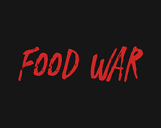

Mictlán Challenge
Debes volver al mundo de los vivos por la ofrenda que darás a Mictlantecuhtli para poder avanzar en el camino de los no vivos.

YungPire!
Eres un vampiro joven llamado YungPire, que vive en su palacio y es invadido por monstruos que debes matar.

FoodWar
Alimentos de cada país luchan una guerra representando a sus países creyendo que son los mejores, que deben vencer y ser considerados por los demás.

PlatMat
Juego en desarrollo. Eme, el mejor robot creado por la humanidad, debe reajustar las constantes universales mientras se dirige a enfrentar al experimentador que está jugando con estas.